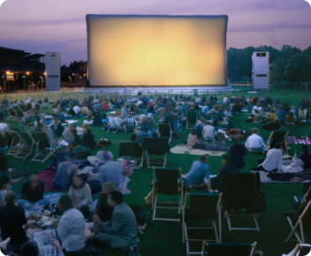
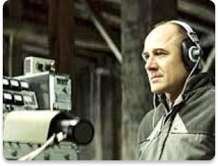

c’est quoi au juste ce festival?!
Le Festival des films en plein air est une idée qui s’est imposée d’elle même. après tout pourquoi ne pas allier le plaisir de partager un bon film avec la joie de se trouver en extérieur, surtout si c’est dans un endroit comme le parc monceau. le festival se déroule entre le 5 et le 8 août au parc monceau à paris. Entre 3 et 5 films seront projétés par jour.
Les films d’auteurs sont à l’honneur, en effet, 100% des films projetés sont classés dans le genre “film d’auteur”. On s’est fixé l’objectif de faire découvrir ce genre au plus grand monde. venez nombreux (euses) partager un bon moment avec nous. Pour avoir plus d’informations, je vous invite à nous contacter via notre formulaire. l’accès au festival est gratuit, mais pour mieux vous accueillir nous vous conseillons de vous inscrire en ligne.